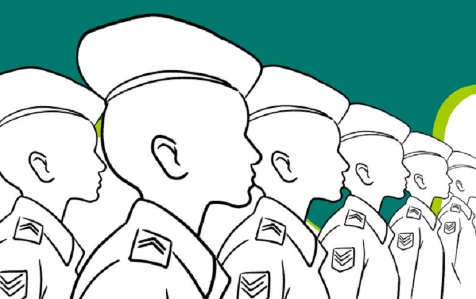

Direito a educação
Comparações
Condição x falta de condição
Escola particular x Escola pública
Aspectos internos
phonelink
Lugares remotos
Processo de militarização das escolas públicas
Aspectos sociologicos
Desigualdade social
Falta de oportunidade
....
....
....
....
Processo de militarização das escolas públicas

Segundo um estudo feito e publicado no site do Inep.gov dos 35,8 milhões de alunos do fundamental no Brasil; 90,5% estudam em escolas públicas e apenas 9,5% em escolas particulares, já no ensino médio a porcentagem de alunos em escolas públicas diminui, caindo para 82,4% e nas escolas particulares 17,6%. Outro estudo divulgado foi a quantidade de matrículas na rede pública que foi de 27.606.210 alunos matriculados no ensino fundamental e médio.